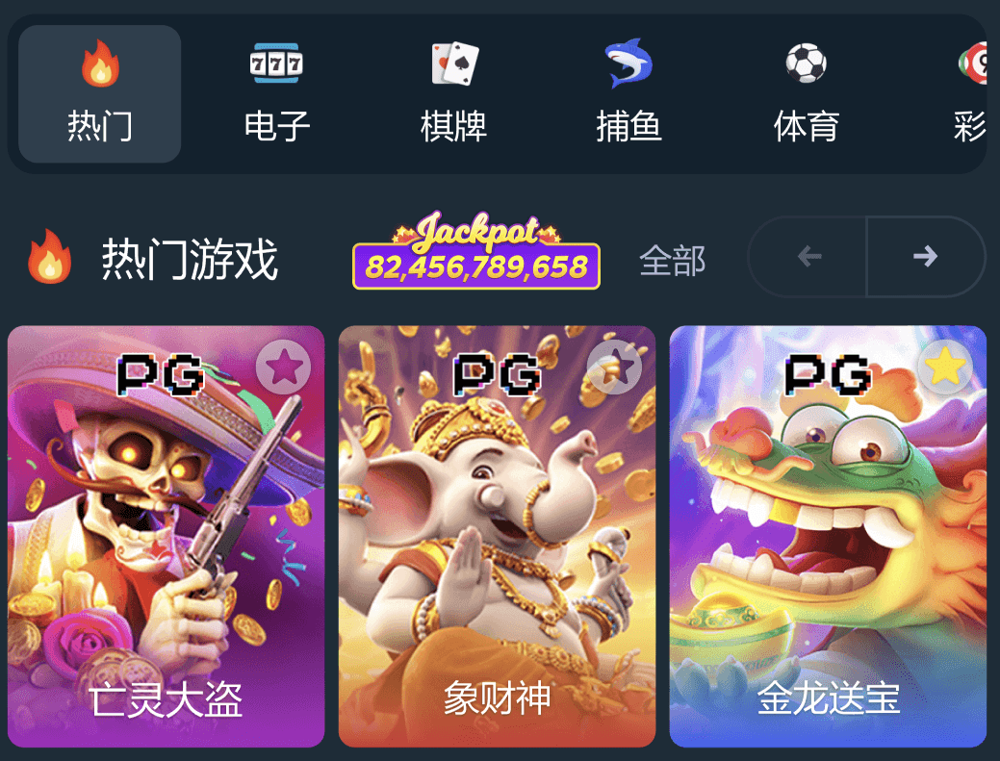
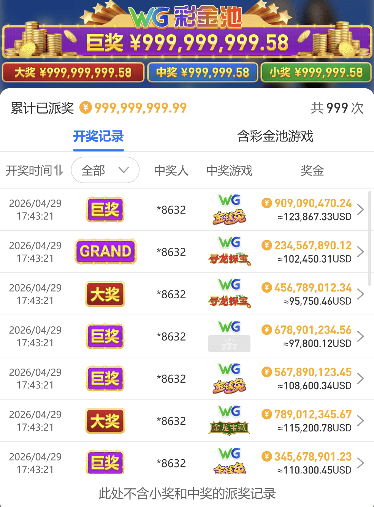

一、彩金池列表
说明：展示已创建的所有彩金池，可根据彩金池ID、币种、展示形式、状态、数据源搜索
列表操作：
1、搜索：可支持输入彩金池ID、币种、展示形式、状态进行搜索
2、新增：点击可新增彩金池
3、状态：点击展示、隐藏
4、修改：可以修改当条彩金池配置
5、详情：可查看当条彩金池配置状态
6、删除：可删除当条彩金池
7、批量操作：支持批量删除
彩金池配置生效需要10-20分钟，同一展示形式、同一币种彩金池开启状态下最多配置3个
二、虚拟彩金池
1、币种：必填，点击可选择对应币种下展示该虚拟彩金池
2、展示形式：单选，可勾选独立模块、展示在平台上、多个轮播
3、彩金池底图：单选，迷你图(推荐)、大图
（1）迷你图指迷你彩金池，配置后客户端会展示在类型文案旁边
（2）支持配置的版式才会展示此功能：综合版1、综合版2、综合版3、综合版5、综合版6、综合版7、综合版10、电子版1、体育版2、体育版3

4、展示位置：单选，根据展示形式的勾选项展示不同的展示位置
5、展示端：区分娱乐城展示、俱乐部展示
6、跳转类型：提供多个模块勾选，支持外部链接，选择外部链接可以输入网址和链接打开方式
7、展示金额范围：支持自定义
注意：金额数字样式可配置大小，如金额太大会超出彩金池边框，请按需输入
8、小数点位数：选择无小数点、1或2
9、金额数字样式：支持默认样式和自定义样式
默认样式：单选，提供6种样式选择
自定义样式：按照提示配置
10、彩金池底图：支持默认样式和自定义样式
11、状态：开启的话点击确认即配置生效
12、配置过程中可以查看右边的预览效果
注意：部分定制版仅彩金池数字配置生效，取最先创建并开启展示得那条数据，若所有彩金池都关闭则不展示数字金额（详情可在定制群咨询）
三、WG真实彩金池
1、币种：必填，点击可选择对应币种下展示该真实彩金池
2、展示形式：真实彩金池只能单独展示
3、展示位置：单选，勾选后展示在客户端对应位置
4、展示端：区分娱乐城展示、俱乐部展示
5、跳转类型：提供多个模块勾选，支持外部链接，选择外部链接可以输入网址和链接打开方式
6、金额数字样式：支持默认样式和自定义样式
默认样式：单选，提供10种样式选择
自定义样式：按照提示配置
7、爆奖动画：提供3种样式选择
8、彩金池底图：支持默认样式和自定义样式
9、状态：开启的话点击确认即配置生效
10、配置过程中可以查看右边的预览效果
注意：真实彩金池根据WG大彩金池推送，预计一天更新一次金额，如配置多个真实彩金池，金额都会展示一致
真实彩金池支持点击弹窗展示开奖记录、含彩金池游戏，点击游戏图标可直接进入
部分版式不支持真实彩金池配置，后台隐藏
